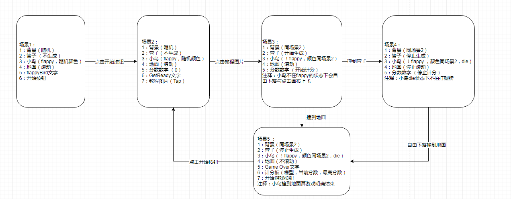
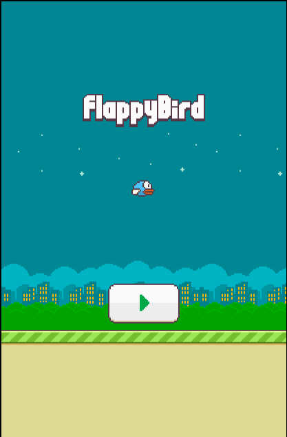
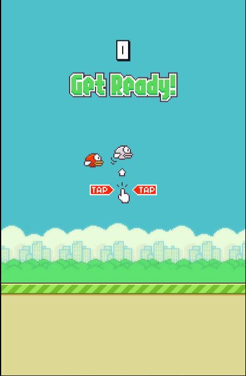
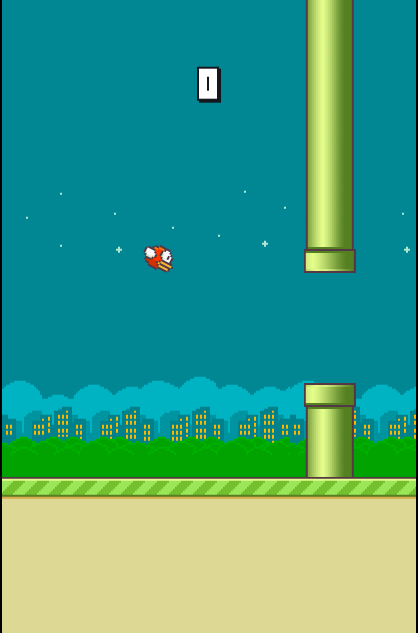
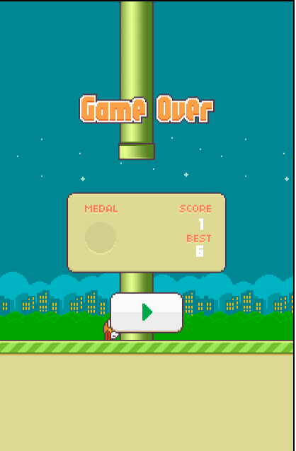

原生JavaScript+Canvas制作FlappyBird小游戏(3)
场景管理类
游戏地址：传送门
项目地址：传送门
坚持做一件事确实比较痛苦，人的惰性确实让人无语，只要稍微一懒惰，马上就会让原有的计划变得无限期拖后。时隔近半个月，才回来写第三篇博客。
话不多说，我们开始介绍本次博客的用意，在基本动画元素都安置好了之后，作为一个完整的游戏，我们还需要让其有开始，游戏进行，游戏结束，重新开始等基本场景，一个游戏总不可能只玩一次吧。这就是所谓的游戏场景。场景类的出现方便我们为游戏添加场景与游戏场景的管理。我们将其整理一下：

可以看到每个场景中的动画元素都给予了其序号，即是添加进入Actors数组的顺序，也就是显示的优先级顺序。有了这个场景流程图之后就可以开始对原先的代码进行整改了。其目的在于Game类的start方法仅仅用于对场景的渲染，而场景负责给用户提供具体的动画效果。
改变后的Game类的start方法：1
2
3
4
5
6
7
8
9start : function(){
var self = this;
var scene_manager = new SceneManager();
self.timer = setInterval(function(){
self.ctx.clearRect(0,0,self.game_width,self.game_height);
scene_manager.render();
},self.config.game_fno);
}
场景类的设计，场景需要通过场景编号来判断当前在什么场景，故render函数负责在不同场景编号下为不同的场景渲染不同的动画元素。而在渲染之前我们需要知道到底有什么元素，故在场景中添加enter方法，这个方法用来规定场景中的动画元素，并进行不同场景的参数配置。每个场景之间的跳转通过点击触发，故需要为画布添加一个事件绑定，通过绑定进行跳转与调用enter方法重新规定场景的编号与参数配置。还需要注意的一点是：每个场景会有不同的动画元素，这些新的动画元素可以由于出现次数较基本动画元素少，可以单独作为对象添加到场景类中。场
可能描述的较为凌乱···好多天没有再碰这段代码的缘故吧。
场景类 (SceneManager.js)：1
2
3
4
5
6
7
8
9
10
11
12
13
14
15
16
17
18
19
20
21
22
23
24
25
26
27
28
29
30
31
32
33
34
35
36
37
38
39
40
41
42
43
44
45
46
47
48
49
50
51
52
53
54
55
56
57
58
59
60
61
62
63
64
65
66
67
68
69
70
71
72
73
74
75
76
77
78
79
80
81
82
83
84
85
86
87
88
89
90
91
92
93
94
95
96
97
98
99
100
101
102
103
104
105
106
107
108
109
110
111
112
113
114
115
116
117
118
119
120
121
122
123
124
125
126
127
128
129
130
131
132
133
134
135
136
137
138
139
140
141
142
143
144
145
146
147
148
149
150
151
152
153
154
155
156
157
158
159
160
161
162
163
164
165
166
167
168
169
170
171
172
173
174
175
176
177
178
179
180// 场景管理类
// 它负责页面的更新与渲染，同时有独立的enter方法,方便进行场景切换
(function(){
var SceneManager = window.SceneManager = Class.extend({
init : function(){
// 设置场景编号
this.scene_no = 1;
this.tips = ["title","text_ready","text_game_over"];
this.tip_name = this.tips[0];
this.tip = {};
this.center_X = game.game_width / 2;
this.button_play = game.resource["button_play"];
this.button_play_X =this.center_X - game.config.button_play_width / 2;
this.button_play_Y = game.horizon_Y - game.config.button_play_height;
this.tutorial = game.resource["tutorial"];
this.tutorial_X = this.center_X - game.config.tutorial_width / 2;
this.tutorial_Y = game.horizon_Y * 0.618 - game.config.tutorial_height / 2;
this.score_panel = game.resource["score_panel"];
this.score_panel_X = this.center_X - game.config.score_panel_width / 2;
this.score_panel_Y = game.game_height * 0.618 - game.config.score_panel_height ;
this.fno = 0;
this.enter();
},
render : function(){
// 渲染game类中的所有元素
for(var i=0,len = game.actors.length;i<len;i++){
game.actors[i] && game.actors[i].update();
game.actors[i] && game.actors[i].render();
}
switch(this.scene_no){
case 1:
this.tips_name = this.tips[0];
this.tip = game.resource[this.tips_name];
this.tip.width = game.config[this.tips_name+"_width"];
this.tip.height = game.config[this.tips_name+"_height"];
game.ctx.drawImage(this.tip, this.center_X - this.tip.width / 2,game.horizon_Y * 0.382 - this.tip.height);
game.ctx.drawImage(this.button_play, this.button_play_X ,this.button_play_Y);
break;
case 2:
this.tips_name = this.tips[1];
this.tip = game.resource[this.tips_name];
this.tip.width = game.config[this.tips_name+"_width"];
this.tip.height = game.config[this.tips_name+"_height"];
game.ctx.drawImage(this.tip, this.center_X - this.tip.width / 2,game.horizon_Y * 0.382 - this.tip.height);
game.ctx.drawImage(this.tutorial, this.tutorial_X , this.tutorial_Y);
game.ctx.drawImage(game.resource["number0"] , this.center_X - game.config.big_number_width / 2 , game.game_height * game.config.score_Y);
break;
case 3:
// 每隔一段距离添加一根柱子
parseInt((this.fno * game.config.land_speed ) / game.config.pipe_group_betwenn_distance ) > game.config.last_pipe_no && new Pipe();
var scoreLength = game.score.toString().length;
for(var i = 0;i<scoreLength;i++){
// 根据分数的位数来设置分数图片的位置，距离中线然后向左偏移一半的位数
game.ctx.drawImage(game.resource["number" + game.score.toString().charAt(i)],this.center_X - game.config.big_number_width*(scoreLength / 2) + 27*i,game.game_height * game.config.score_Y);
}
// 直接根据小鸟是否死亡
if(game.bird.getIsDie()){
this.scene_no = 4;
this.enter();
}
this.fno ++;
break;
case 4:
this.tips_name = this.tips[2];
this.tip = game.resource[this.tips_name];
this.tip.width = game.config[this.tips_name+"_width"];
this.tip.height = game.config[this.tips_name+"_height"];
game.ctx.drawImage(this.tip, this.center_X - this.tip.width / 2,game.horizon_Y * 0.382 - this.tip.height);
game.ctx.drawImage(this.score_panel,this.score_panel_X,this.score_panel_Y);
game.ctx.drawImage(this.button_play, this.button_play_X ,this.button_play_Y);
var scoreLength = game.score.toString().length;
for(var i = 0;i<scoreLength;i++){
game.ctx.drawImage(game.resource["number_score" + game.score.toString().charAt(i)],this.score_panel_X + 195 - game.config.small_number_width*(scoreLength / 2) + 10*i,this.score_panel_Y+36);
}
if(game.score > localStorage.getItem("best_score")){
game.best_score = localStorage.setItem("best_score",game.score);
}
var best_score_length = localStorage.getItem("best_score").toString().length;
for(var i = 0;i<best_score_length;i++){
game.ctx.drawImage(game.resource["number_score" + localStorage.getItem("best_score").toString().charAt(i)],this.score_panel_X + 195 - game.config.small_number_width*(best_score_length / 2) + 10*i,this.score_panel_Y+75);
}
break;
default:
break;
}
},
// 负责为场景更改动画元素与参数设置
enter : function(){
switch(this.scene_no){
case 1:
// 元素
new Background();
game.actors.push( game.pipes );
game.bird = new Bird();
new Land();
// 参数
game.config.bird_is_flappy = true;
game.bird_X = game.game_width / 2;
game.config.bird_flappy_fno = 7;
break;
case 2:
//元素
game.actors.length = 0;
game.pipes.length = 0;
new Background();
game.actors.push( game.pipes );
game.bird = new Bird();
new Land();
// 参数
// 小鸟扇动翅膀
game.config.bird_is_flappy = true;
// 小鸟横坐标定位
game.bird_X = game.game_width * 0.382;
// 地面恢复速度
game.config.land_speed = 5;
// 重新计分
game.score = 0;
// 重新计算管道序号
game.config.last_pipe_no = 0;
game.config.bird_is_hit = false;
game.config.bird_is_die = false;
break;
// 场景2到场景5基本没有新元素添加进来
case 3:
this.fno = 0;
game.bird.fno = 0;
game.config.bird_is_flappy = false;
game.config.bird_flappy_fno = 3;
break;
case 4:
break;
default :
break;
}
this.bindEvent();
},
// 需要为每一个场景添加监听事件
bindEvent : function(){
var self = this;
game.canvas.onclick = function(event){
// 利用相对坐标要更为准确一些。它是相对于画布而言
var mouse_X = event.offsetX;
mouse_Y = event.offsetY;
switch(self.scene_no){
case 1:
if(mouse_X >= self.button_play_X && mouse_X <= self.button_play_X + game.config.button_play_width && mouse_Y >= self.button_play_Y && mouse_Y <= self.button_play_Y + game.config.button_play_height){
self.scene_no = 2;
self.enter();
}
break;
case 2:
self.scene_no = 3;
self.enter();
break;
case 3:
// 没有撞到就还可以飞
!game.config.bird_is_hit && game.bird.fly();
break;
case 4:
if(mouse_X >= self.button_play_X && mouse_X <= self.button_play_X + game.config.button_play_width && mouse_Y >= self.button_play_Y && mouse_Y <= self.button_play_Y + game.config.button_play_height){
self.scene_no = 2;
self.enter();
}
break;
default :
break;
}
}
}
});
})();
由于好多参数只出现过一次，就不再往config.json文件里添加了。如计分面板啊，分数位置啊什么的···
一个粗糙的flappyBird就算完成了：



